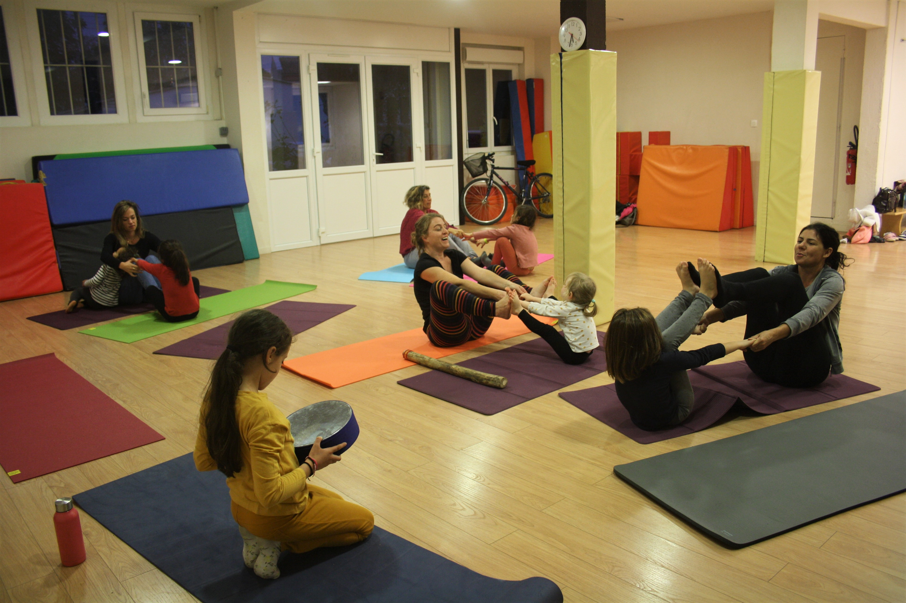
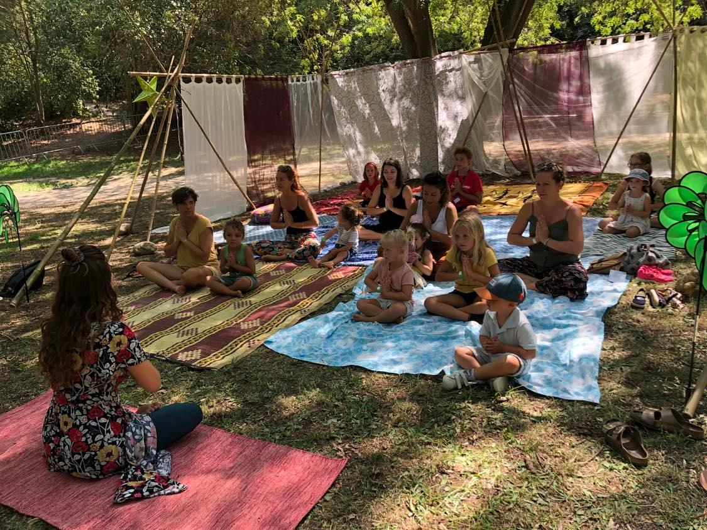
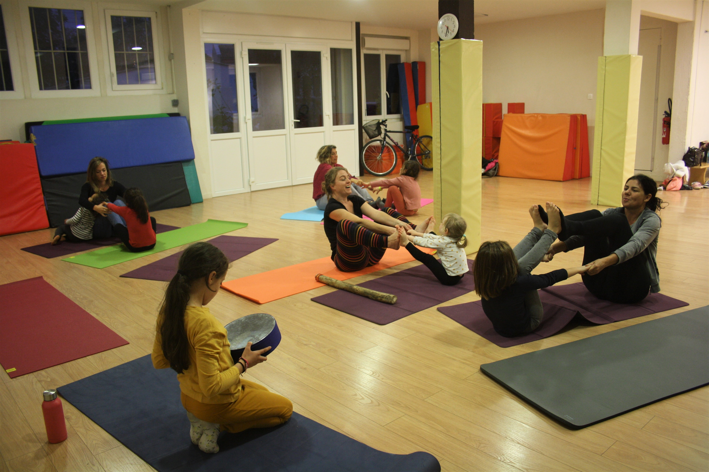
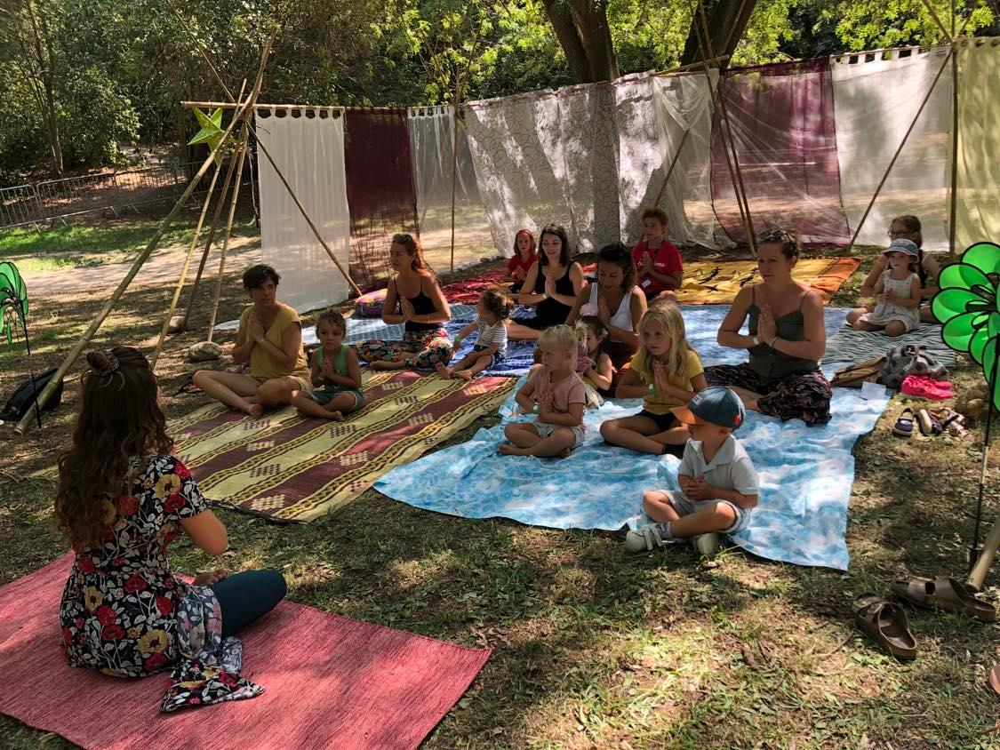
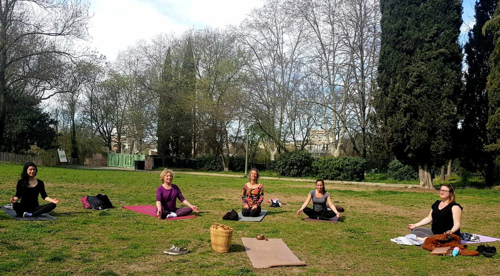
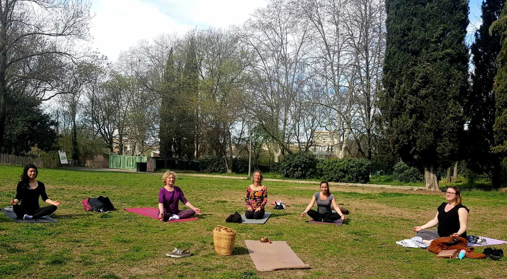

Cours Hatha Yoga adultes

Hatha Yoga & Hatha Flow :
Un pur moment de connexion à soi en pratiquant les asanas (postures), les pranayamas (respirations), les auto-massages, la relaxation & la méditation lors des séances. Venez prendre soin de vous grâce à des exercices de pleine conscience pour favoriser la concentration, améliorer la souplesse et l'équilibre corporel, apaiser les émotions par la respiration et la relaxation, recentrer son énergie et surtout vivre un moment de détente et de bonheur.Âge : Adultes (à partir de 18 ans)
Durée : 1h15
Nombre de places : 6 places par cours
Créneaux horaires : CRENEAUX PROCHAINEMENT DISPONIBLE
Tarif :
15 euros le cours la séance
46 euros le mois pour 1 cours par semaine
Yoga Ludique Parent & Enfant


 



Un cours d'éveil au Yoga pour les enfants et les parents sous forme de contes, ludique et adapté:
Je suis heureuse de vous proposer les Ateliers Yoga & bien-être enfants/ parents :-Yoga sous forme de contes & chansons, postures à réaliser avec son enfant
-Massages & exercices de sophrologie ludiques à partager avec son enfant
Des exercices de pleine conscience pour favoriser la concentration, améliorer la souplesse et l'équilibre corporel, apaiser les émotions par la respiration et la relaxation, recentrer son énergie et surtout partager un moment de bonheur en famille.
Un instant de douceur et d'apaisement pour prendre soin de soi et de son enfant.
Âge : De 2,5 à 8 ans pour les enfants et leurs parents
Durée : 45min
Nombre de places : 5 familles
Créneaux horaires : CRENEAUX PROCHAINEMENT DISPONIBLE
Tarif : 15 euros la séance par famille
46 euros le mois pour 1 cours par semaineYoga en Plein Air
 

Description : Le Yoga en Plein Air permet de se connecter à la nature tout en pratiquant des postures de yoga en extérieur, pour une expérience revitalisante.
Âge : Adultes et ados
Durée : 1h30
Nombre de places : 15 places disponibles
Créneaux horaires : Samedi 9h - 10h30
Tarif : 18€ par séance
Yoga Prénatal & Postnatal

Description : Yoga adapté aux femmes enceintes et post-partum, pour accompagner la grossesse et la récupération après l'accouchement.
Âge : Femmes enceintes ou jeunes mamans
Durée : 1h
Nombre de places : 10 places disponibles
Créneaux horaires : Mardi 14h - 15h
Tarif : 22€ par séance
Yoga Parents & Bébé


Description : Un yoga doux où les parents pratiquent avec leur bébé dans un cadre serein et bienveillant, idéal pour le renforcement du lien parental.
Âge : Parents et bébés de 3 à 12 mois
Durée : 1h
Nombre de places : 8 familles
Créneaux horaires : Jeudi 9h30 - 10h30
Tarif : 18€ par séance
Atelier « Connexion à soi »


Description : Un atelier permettant de découvrir les différentes pratiques de méditation, de relaxation et de respiration pour mieux se connaître et se recentrer.
Âge : Adultes
Durée : 2h
Nombre de places : 12 places disponibles
Créneaux horaires : Samedi 14h - 16h
Tarif : 30€ par atelier